TOWNSCAPE DESIGN町並みの意匠
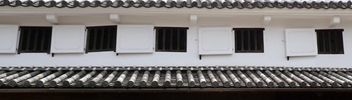
美観地区には多くの町屋が残っており、工夫の凝らされた意匠が多く見られます。最も古い民家型の塗り屋造りは井上家で、1711年～1716年（正徳年間）の間に建てられたものと推測されています。また、町屋に用いられている倉敷窓や倉敷格子などは江戸～明治時代のものとされており、これは倉敷独特の意匠です。
塗り屋造り
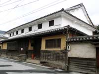
町屋に多く見られる構造で、防火対策として隣家と接する両側面と正面２階部分の外壁全体が白漆喰仕上げにされています。土蔵造りに比べると壁の厚みは薄く、建物の正面と背面は木が露出しています。
※写真は現存する最古の町屋（井上家）
土蔵造り
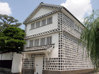
全体に土塗り白漆喰仕上げがされており、多くの蔵でこの構造が見られます。塗り屋造りより壁が厚く、耐火の役目を担っています。内部の柱や梁などは塗りが施されていない為、木が露出しています。
倉敷格子
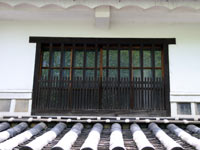
主屋１階正面などにはめ込む格子が主流ですが、その他に1、2階の窓の出格子や 平格子として用いられることがあります。上下に通る親竪子（たてご）の間に細く短い子が3本入ります。
倉敷窓
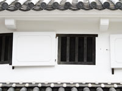
この地域では、2階の正面に窓が開かれていることを「倉敷窓」としていました。角柄（つのがら）窓形式の枠を組み、3本又は5本の木地の竪子（たてご）が入ります。主流は、3本の竪子（たてご）が入るものであったとされています。
虫籠窓（むしこまど）
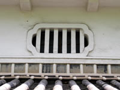
窓格子が塗り込めになっている窓で、主に主屋正面2階に設けられます。枠の形は様々で、枠も竪子も塗り込めですが、後に丸木や角木、鉄製など等様々な虫籠窓が現れました。
聖窓（ひじりまど）
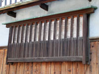
塀に取り付けられた格子の入った小さな出窓のことをいいます。格子台の内側に引き違いの板戸を入れています。
犬矢来（いぬやらい）
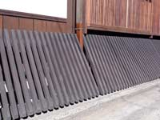
円弧状の反りついた割竹や細い桟木を並べた柵のことで、元々は犬走りからの砂利や泥が建物に飛んでくることを避けてのことですが、矢来（やらい）の語源には「入るを防ぐ」という意味もあり、泥棒避けの対策でもあったとされています。
なまこ壁（海鼠目地瓦張）
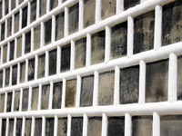
正方形の平瓦を外壁に張り付け、目地を漆喰で盛り上げて埋める手法。この盛り上がりの断面が半円形のナマコ形に似ていることからこの名称が付けられています。このナマコ形の目地は平行に通る一文字目地と斜めに通る筋違い目地があります。
奉行窓
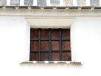
土蔵造りの蔵の窓形式として使い、長方形の開口部に太い塗り込めの竪子を入れます。竪子は木の角木を芯しますが、後に帯鉄を組んだ奉行窓も現れました。
鉢巻
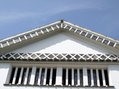
軒裏に漆喰で厚く塗り込められている部分のことで、平瓦が張られている場合もあります。
軒
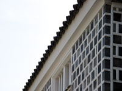
主屋に比べ外壁からの出が短いのは防火の為で、軒裏は漆喰で塗り込められています。
出入口土戸
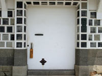
防火の為、出入口の戸にも漆喰に塗り込められています。戸は片引き形式と両開き形式があります。
一覧に戻る